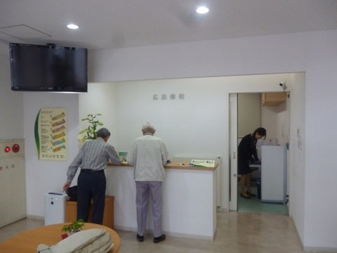
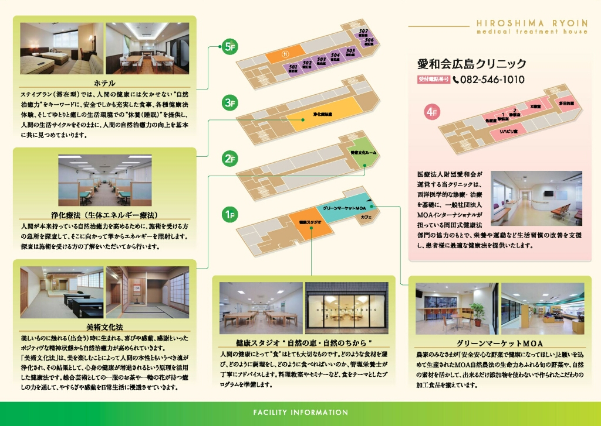
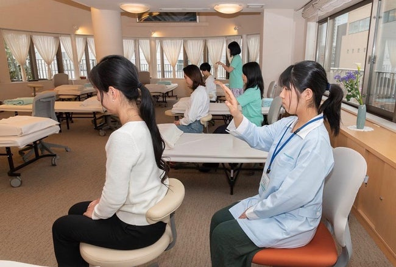
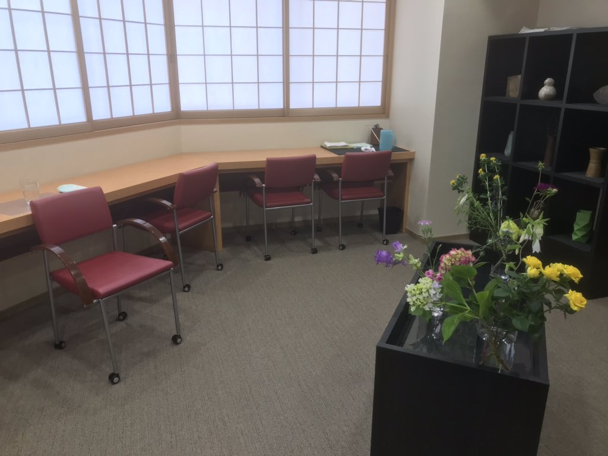
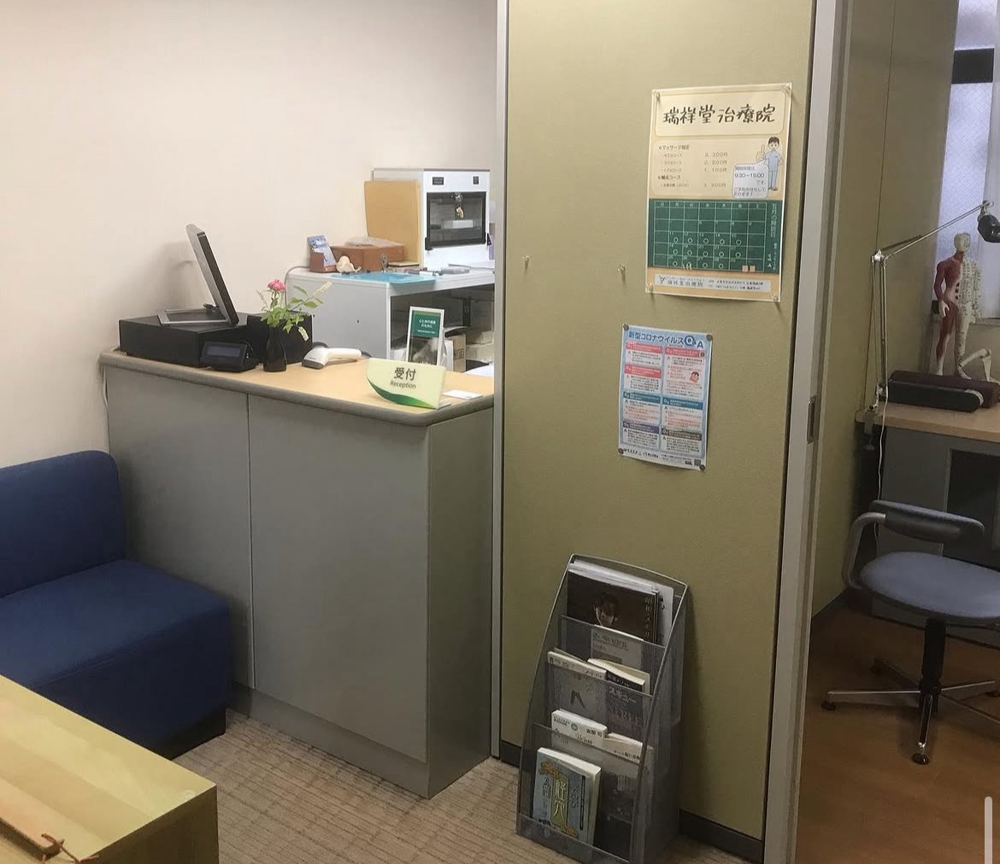
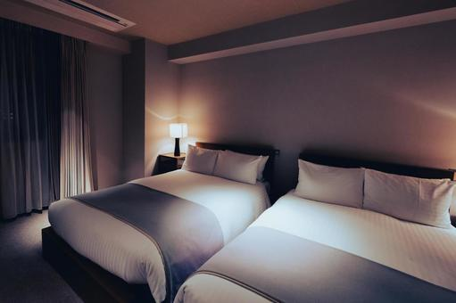
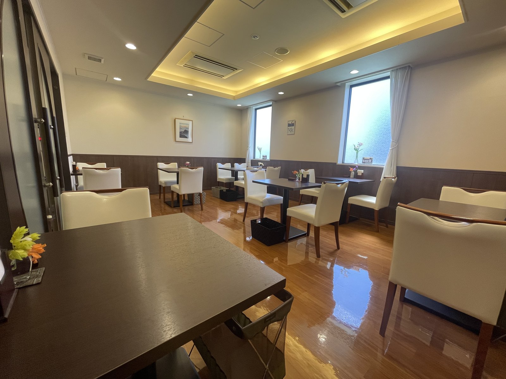

広島療院は、医療法人財団愛和会と一般社団法人MOAインターナショナルが、
統合医療の視点に立ってそれぞれの役割・特色に従い協力し合いながら
協同で運営する施設です。
お客様の自然治癒力向上のため、それぞれの分野のプロフェッショナルが、
一人ひとりにあった健康サービスをご提供いたします。

生きる力をあなたに
自然治癒力を高め こころと体を癒す広島療院
MOAインターナショナル × 医療法人財団 愛和会
Welcome
広島療院へようこそ

療院の理念
統合医療の視点から、こころ・体・霊性をトータルにサポートする健康ひろばです。

岡田式浄化療法
岡田茂吉氏が創成した健康法。掌からのエネルギーで自然治癒力を高めます。

アートヘルスケア（美術文化法）
美の喜びや感動が、こころと体をきれいにして自然治癒力を活性化します。

愛和会広島クリニック
西洋医学を基礎に、生活習慣の改善を含む統合的な医療サービスを提供します。

瑞祥堂治療院
東洋医学の叡智と現代医学を融合。統合医療の一環として鍼灸・マッサージをご提供します。

ホテル
こころと体、ライフスタイルをゆっくり見つめる宿泊フロアをご用意しています。

自然食レストラン「かんな」
MOA自然農法の恵みを活かした料理で、こころとからだを養います。

グリーンマーケット広島店
MOA自然農法・有機栽培の農産物や無添加食品をお届けする自然食ショップ。
Calendar — May & June 2026
施設カレンダー
予約番号 082-248-4221 ／ 受付時間 午前10時〜午後4時
📞 自然食レストランかんな直通：082-236-6050（9〜17時）
⚠️ 6月の第1土曜日は15時閉館（療院行事のため、全館電話受付も終了）
💡 6月よりレストランメニュー・美術文化法プログラムの価格改定があります。詳細は各ページをご覧ください。
⚠️ 6月の第1土曜日は15時閉館（療院行事のため、全館電話受付も終了）
💡 6月よりレストランメニュー・美術文化法プログラムの価格改定があります。詳細は各ページをご覧ください。
おかげさまで広島療院は開所15周年を迎えます
いつもご支援いただきありがとうございます。これからもよろしくお願い申し上げます。
News & Updates
お知らせ・掲示板
📌 重要
令和8年5月7日
令和8年6月の受付開始について（6月価格改定のお知らせ）
6月より美術文化法プログラム・レストランメニューの価格改定を実施します。受付開始は5月11日（月）10:00〜。
浄化療法
令和8年5月7日
新コースのご案内 — クイックコース30分・15分
バランスコース（60分）に加え、クイックコース30分（2,200円）・15分（1,100円）が新設されました。
レストラン
令和8年5月7日
コーヒーテイクアウト販売開始（5月7日〜）
レギュラーサイズ（160ml・ホット／アイス）350円。使用豆はレストラン同様「グリーンコーヒー」。
「病院に行くほどではないけれど、なんとなく不調が続いている」
「薬に頼らず、自分の力で健康になりたい」
「心も体も疲れていて、どこかゆっくり休みたい」
「食事や生活習慣を、根本から見直してみたい」
「薬に頼らず、自分の力で健康になりたい」
「心も体も疲れていて、どこかゆっくり休みたい」
「食事や生活習慣を、根本から見直してみたい」
そんな方のために、広島療院はあります。
— 自然治癒力を高め、こころと体をやさしく整える場所 —
— 自然治癒力を高め、こころと体をやさしく整える場所 —
Testimonials
体験者の声
岡田式浄化療法
長年悩んでいた肩こりが、数回の施術でずいぶん楽になりました。「浄化」という言葉に最初は少し戸惑いましたが、スタッフの方が丁寧に説明してくださり、安心して受けられました。
アートヘルスケア（美術文化法）
茶の湯体験は、日常のせわしなさを忘れさせてくれます。難しい作法は一切なく、ただお茶をゆっくり楽しむ時間。通い始めてから気持ちが穏やかになりました。
愛和会広島クリニック
呼吸器の不調で受診しましたが、薬の処方だけでなく食事や生活習慣のアドバイスまでいただけました。「治す」だけでなく「予防」まで考えてくれる先生です。
元気になるヨガ
80代の私でも無理なく参加できています。先生が一人ひとりに合わせて教えてくださるので、自分のペースで続けられます。背筋が伸びたと周りから言われるようになりました。
自然食レストラン かんな
自然農法の野菜を使った日替わりランチは、やさしい味でほっとします。「食べることが健康づくり」という意味が、ここに来てよく分かりました。毎週楽しみにしています。
瑞祥堂治療院
鍼灸は初めてで怖かったのですが、丁寧な問診のあと体全体を診てもらえて、慢性的な冷えと疲れが改善しました。クリニックと連携しているので安心感があります。
— 全館フロアご案内 —